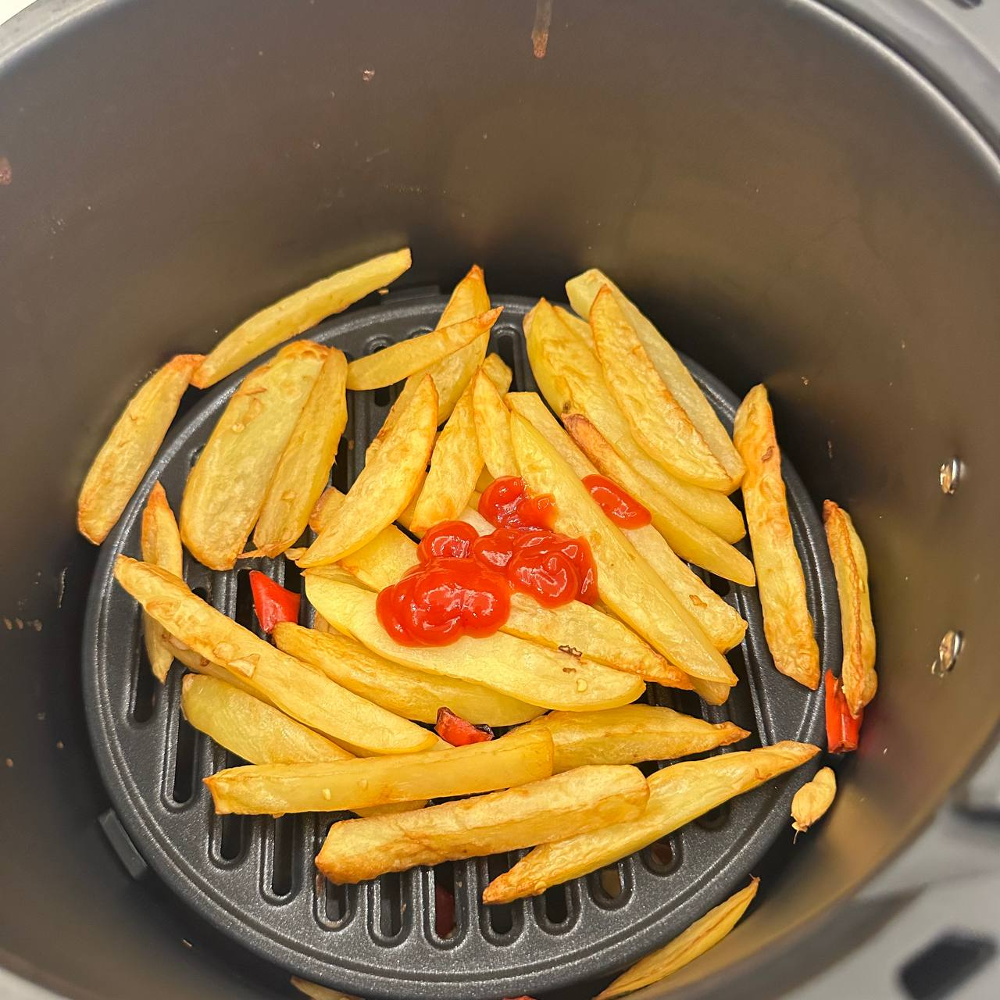
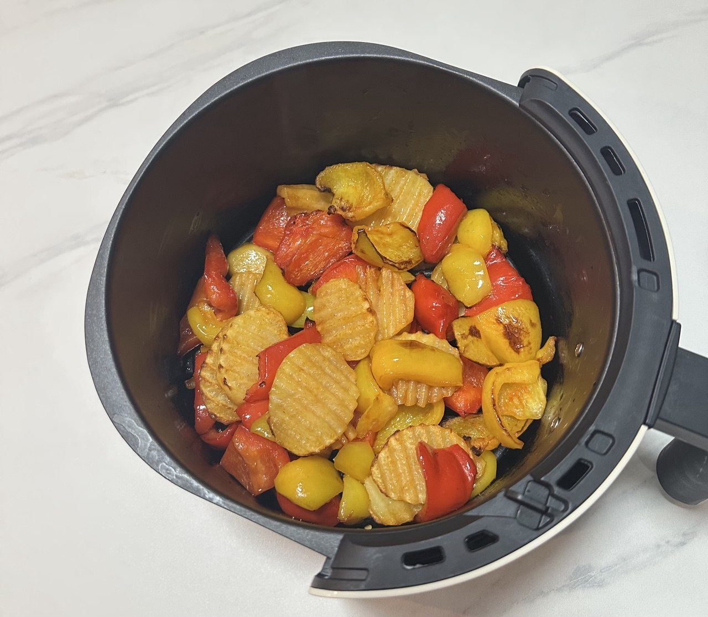
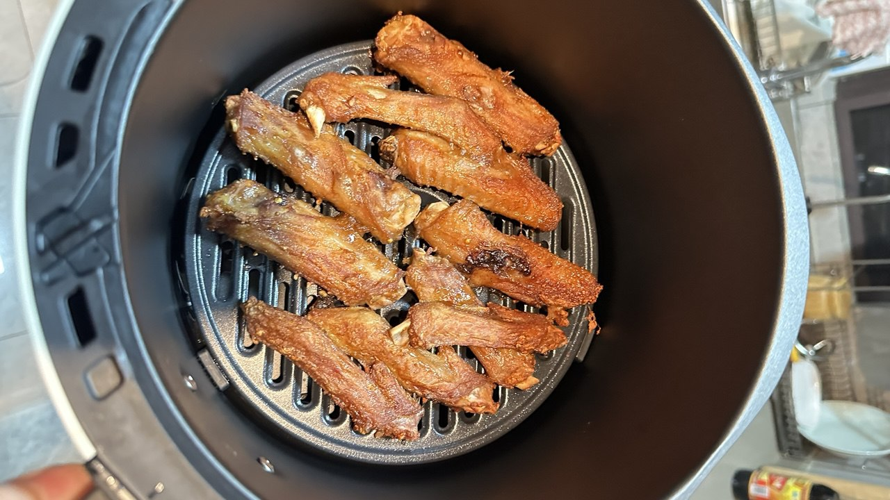
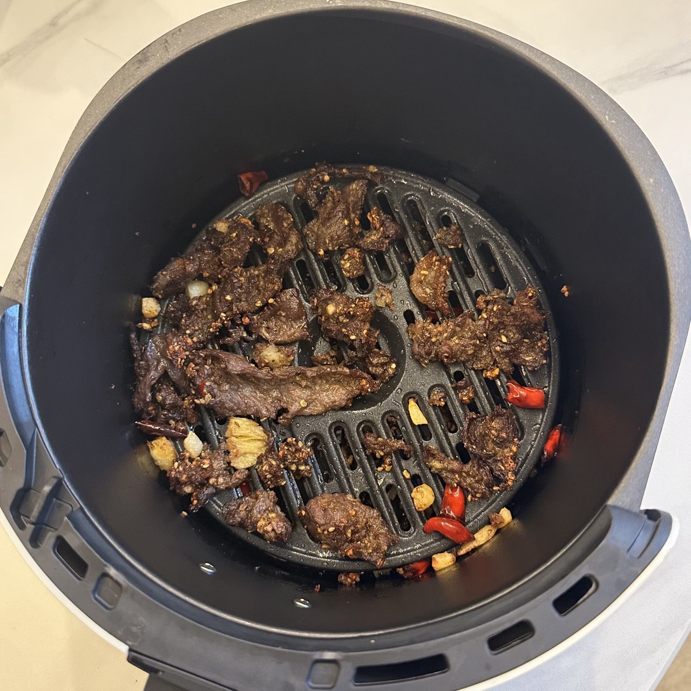
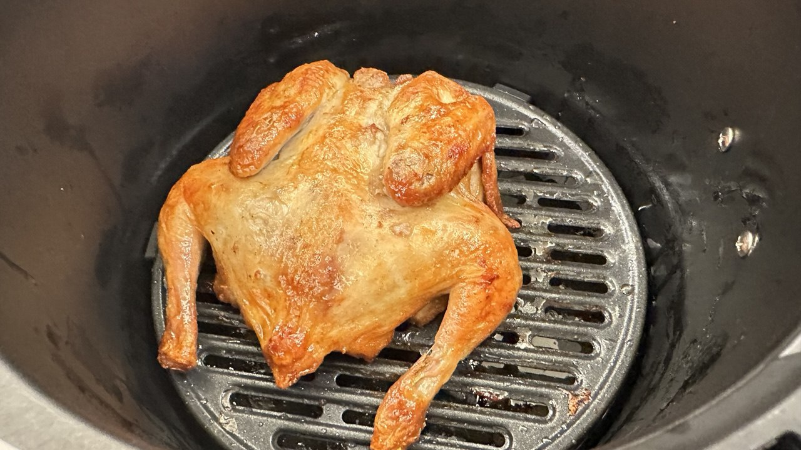
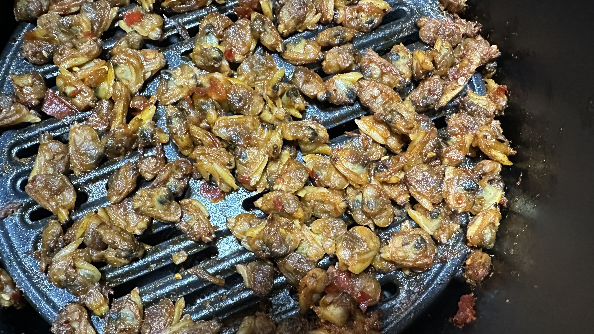
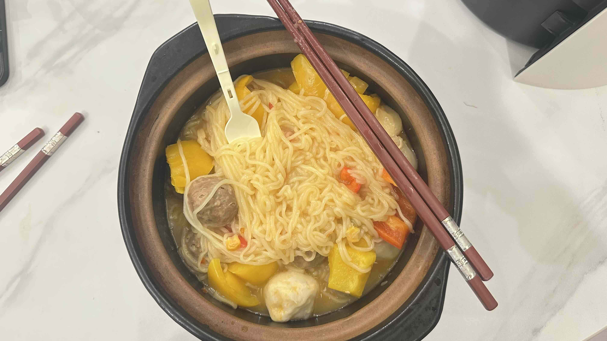

الطهي بقلاية هوائية | أصلي، ترجم بواسطة AI
أصبح قلاية الهواء أداة الطهي المفضلة لدي مؤخرًا. لقد اشتريت قلاية الهواء من Midea طراز KZE5004 بحوالي 126 يوان صيني.
لقد أعددت الأطباق التالية، وكانت التجربة ممتعة حقًا.
الطبق الأخير الموضح هنا لم يُطهَ في قلاية الهواء - كان مجرد معكرونة مطهوة في قدر. نظرًا لأنها واحدة من محاولات الطهي الأخيرة لي، فقد أدرجتها هنا أيضًا.
إذا كنت تستخدم أداة طهي بشكل متكرر بعد الحصول عليها، يمكنك القول أنك تحبها حقًا.
حلت قلاية الهواء محل الفرن الكهربائي الخاص بي. في الواقع، أرغب في استخدام الاثنين معًا، لكن زوجتي لا تسمح بذلك - تشتكي من أنها تشغل مساحة كبيرة وتسبب فوضى في غرفة الطعام والمطبخ، المليئين بالفعل بالعديد من الأدوات وأدوات المائدة.
هذا منطقي لأن زوجتي تزورني في عطلات نهاية الأسبوع، ولا أريد أن يشعر المكان بالازدحام. إذا كنت أعيش بمفردي بشكل دائم، كنت سأعيد الفرن الكهربائي إلى غرفة الطعام.
هناك بعض الفوائد لامتلاك الجهازين معًا. أولاً، يمكنك استخدام الفرن الكهربائي وقلاية الهواء في نفس الوقت، خاصة عند طهي عدة أطباق. ثانيًا، يمكنك مقارنة الفروق الدقيقة في الطعم عند تحضير نفس المكونات في كليهما. ثالثًا، من الإهدار ترك منتج جيد بدون استخدام.
استخدام أداة واحدة طوال الوقت يمكن أن يصبح مملًا، لذا جربت الطهي التقليدي على الموقد وحضرت المعكرونة في قدر. أتذكر في عامي 2020 و2021، كنت أطبخ أطباقًا مشابهة في منزل والديّ وأحيانًا أصور مقاطع فيديو قصيرة عنها.
في ذلك الوقت، بدا الطهي بلا جهد. لكن الآن، لأنني لا أطبخ كثيرًا، حتى استخدام قلاية الهواء يشعرني أحيانًا بأنه مزعج، وأميل إلى طلب الطعام الجاهز عندما أكون مشغولًا. نتيجة لذلك، لم أستخدم مقلاة أو قدرًا كثيرًا مؤخرًا - لذا أنا سعيد لأني فعلت ذلك اليوم.
اشتريت في الأصل أكياس من كرات اللحم البقري لطهيها في قلاية الهواء، لكنني الآن أريد تجربتها في قدر أيضًا.
كانت النودلز لذيذة. استخدمت الكثير من الماء لسلق المكونات، ثم صببت الماء الزائد، وأضفت خصلة النكهة إلى القدر. كان الطبق النهائي رائعًا!

المصدر: تصوير شخصي

المصدر: تصوير شخصي

المصدر: تصوير شخصي

المصدر: تصوير شخصي

المصدر: تصوير شخصي

المصدر: تصوير شخصي

المصدر: تصوير شخصي
الطهي
2024.12.29
-
الطهي لنفسك بسيط. استخدم الزيت للقلي لأنه يتمتع بدرجة غليان أعلى من الماء، مما يساعد في تسخين الطعام بشكل أكثر فعالية.
-
من السهل تحضير طبق يحتوي على اللحم والخضار والفلفل الحار والثوم والزنجبيل.
-
مفرمة الخضار أداة مفيدة جدًا. يمكنها فرم الخضار إلى مكعبات أو شرائح أو شرائط، ويمكن استخدامها لمهام مثل تقطيع البطاطس أو صنع حبيبات صغيرة من الفلفل.
-
صنع الحساء سهل باستخدام طباخ كهربائي. أضف المكونات، تبّل بالملح، اضبط المؤقت واتركه لينضج.
-
حساء البطاطا الصيني رائع لأنه ينضج بسهولة في الحساء ويجعله كثيفًا. الجزر والفجل والطماطم أيضًا مكونات جيدة لهذا الحساء.
-
يمكن استخدام فرن الشوي لصنع كعك البيض، لحم الضأن، لحم البقر، لحم الخنزير، الهوت دوغ، الفطر، والمزيد. بالنسبة للحم، اضبط درجة الحرارة على 200°C واطهه لمدة 20 دقيقة تقريبًا.
-
للطهي في الهواء الطلق، ستحتاج إلى نار. يمكن استخدام الأوراق الجافة لإشعال النار. ابحث عن وعاء لحمل الطعام للطهي، أو حتى استخدم بلاطة كوعاء مؤقت.
-
يمكن أيضًا استخدام طباخ الأرز لتسخين الطعام، ليس فقط الأرز. ومع ذلك، تذكر أن الخضار تميل إلى إطلاق الماء، مما يمكن أن يجعل الأرز رطبًا جدًا. أضف كمية صغيرة فقط من الماء إذا كنت تطهو الخضار في طباخ الأرز.
-
روبوت الطهي أداة ملائمة لصنع الأطباق. ببساطة أضف المكونات ودع الروبوت يتولى التقليب.
-
نحتاج إلى فهم المدة التي يحتاجها كل مكون للقلي. البروكلي يتطلب وقتًا أطول، بينما يحتاج الفطر واللحم إلى وقت أقل.
-
إذا قمنا بطهيها معًا، ستؤدي أوقات الطهي المختلفة إلى أن بعض المكونات سيتم طهيها أكثر من اللازم والبعض الآخر تحت النضج. ترتيب إضافة المكونات إلى المقلاة مهم.
-
يجب أن نقلل من غسل القدر بين الأطباق ويمكننا قلي بعض الأطعمة معًا.
-
يمكننا تطبيق نفس العملية أو الوظيفة على عناصر أو عناصر متشابهة في الخصائص. ينطبق هذا على كل من الطهي والبرمجة.
-
المكونات التي يتم تسخينها في فرن الشوي يمكن طلاؤها بدقيق الذرة وصلصة الصويا الخفيفة. استخدام عصير الفاكهة للتتبيل مقبول أيضًا، مثل عصير الليمون أو البرتقال أو التفاح.
-
نقطع اللحم أو المكونات الأخرى إلى قطع صغيرة للسماح لها بالتسخين بشكل أكثر فعالية في القدر. لذلك، يكون التحضير لصنع الحساء مختلفًا، حيث يمكن أن يتقبل قطعًا أكبر من المكونات.
-
أهم شيء في الطهي هو جعل الطعام مطهوًا بالكامل ليكون آمنًا للأكل.
-
استخدام فرن الشوي بدلًا من قدر البخار الكهربائي يعني أنه لا يتضمن الماء لتسخين الطعام، مما يجعل الطعام جافًا.
-
الهاون والمدقة أداة رائعة لسحق الثوم.
-
لا تستخدم الكثير من الملح، خاصة إذا كانت المكونات مغطاة بالفعل بصلصة الصويا.